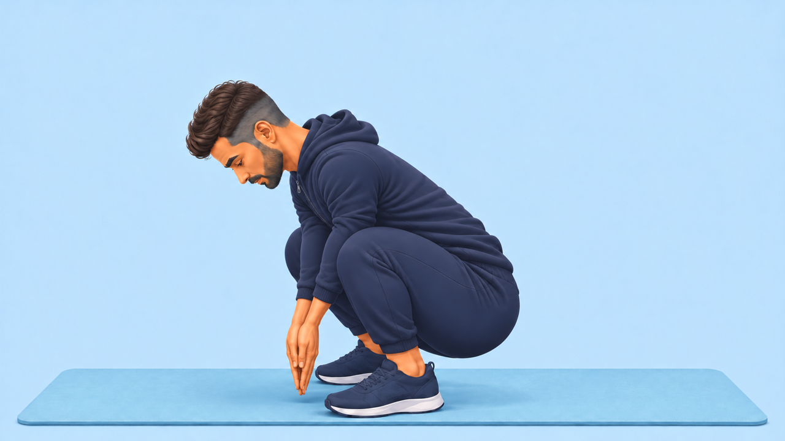
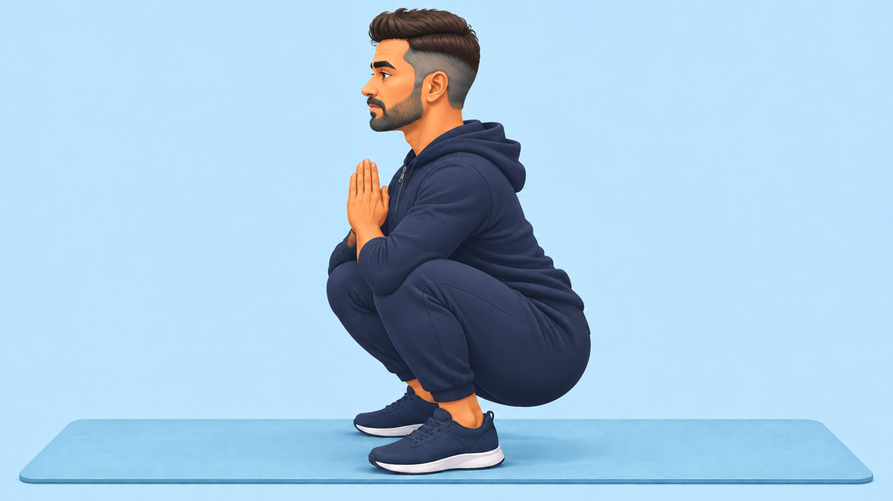

08 · Namaskarasana yoga pose
Male Coach, shown from the side. Prepared poses beside the Relatio reference.
The Coach video is still being corrected. These are preparation images, not a finished movement demonstration. The generated video takes added incorrect hand contact with the mat and were rejected. Jana and Steffen have not approved this version.
Relatio reference
Reference timing: approximately 4.97 seconds per repetition, with a longer pause in the folded position.
Coach · prepared poses


The finished demonstration will show three repetitions, then stop, with natural blinking and a restrained expression.